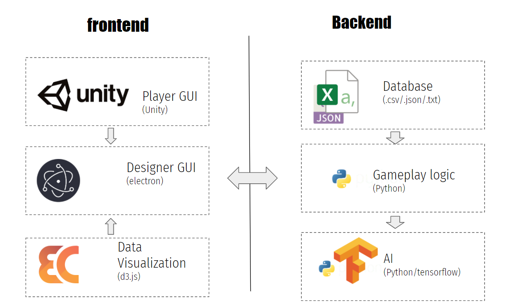

Brief Introduction To Architecture
The Requirements
The demo we present is how we image game development with AI looks like. It is also a complex software with many subsystems.
As an software, it need:
- Player can play the game
- AI can play the game
- Designer can change the game behaviour
- Automate playtest with AI
- Visualize the data of the playtest
The Architecture

Frontend&Backend
We divide our architecture into frontend and backend.
The backend includes the core of our techique: run the gameplay and train an AI on it.
The frontend is all about present the results of backend to user: player GUI present the gameplay, data visualization present the playtesting data and designer GUI present everything desginers can operate.
Six Modules
Database
The word 'database' is not the database in web such as MySQL, its more like manager of data and records, including AI and gameplay.
It's important to seperate data and the logic (gameplay logic) operating those data. Because:
1. We have multiple languages and platforms,
we need a persistence layer in this archtecture
2. Much easier to build a tool for designer to configure the game.
Gameplay logic
We implement the gameplay in python, not C# in Unity. Because we use tensorflow to develop our AI algorithm, this is the better solution.
AI
Our AI module with APIs from gameplay logic to play and game and train an AI for it. It also provides APIs for Designer GUI, so designer can train AI by just clicking a button,
PlayerGUI
We seperate logics and graphics of a game. The logic is in python, and graphics is in this part. We use Untiy and because we implement our gameplay in python, this is hard than normal game development in Unity.
Data Visualization
This module visualize the data from automate playtesting.
We find the d3.js this libarary. So we can render different kinds of data with large scale easily.
Designer GUI
This part is the core of the frontend. It acts like a glue, combine all other modules into a single app, providing GUI for designers.